扉页
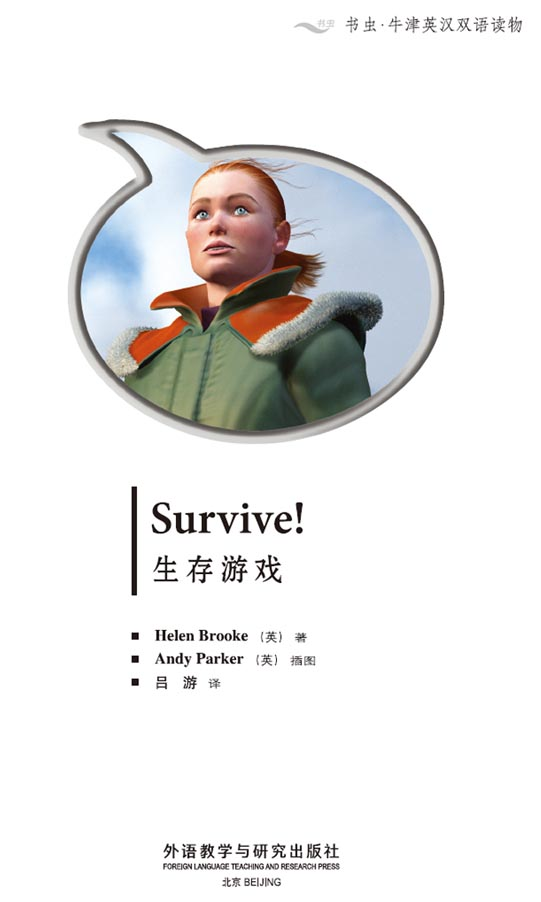
Copyright
Copyright © Foreign Language Teaching and Research Press 2007
All rights reserved. No part of this publication may be reproduced or distributed by any means, or stored in a database or retrieval system, without the prior written permission of Foreign Language Teaching and Research Press.
本书版权由外语教学与研究出版社独家所有。如未获得该社书面同意，书中任何部分之文字及图片，不得用任何方式抄袭、节录、翻印或存储利用于任何数据库及检索系统等。
Published by Foreign Language Teaching and Research Press
No. 19 Xisanhuan Beilu
Beijing, China 100089
http://www.fltrp.com
版权页
京权图字01-2006-2801
Originally published by Oxford University Press, Great Clarendon Street, Oxford. © 2002 This edition is licensed for sale in the People's Republic of China only and not for export therefrom.
'Oxford' is a registered trademark of Oxford University Press.
图书在版编目（CIP）数据
生存游戏／（英）布鲁克（Brooke, H.）著．—北京：外语教学与研究出版社，2006.5（2013.6重印）
（书虫·牛津英汉双语读物）
书名原文：Survive!
ISBN 978-7-5600-5454-4
Ⅰ．生… Ⅱ．布… Ⅲ．①英语—语言读物②短篇小说—英国—现代 Ⅳ．H319.4: I
中国版本图书馆CIP数据核字（2007）第018922号
出版人：蔡剑峰
责任编辑：余 军
封面设计：孙莉明
出版发行：外语教学与研究出版社
社 址：北京市西三环北路19号（100089）
网 址：http://www.fltrp.com
书 号：ISBN 978-7-5600-5454-4
* * *
制售盗版必究 举报查实奖励
版权保护举报电话：(010)88817519
目录
Survive!
Survive!
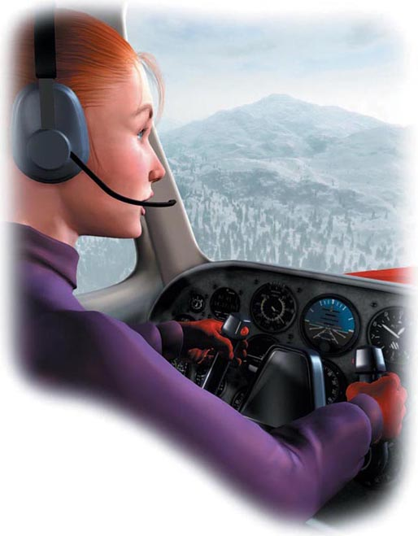
1 Your name is Chris, and you are in a small plane, going across the Rocky Mountains. Suddenly the engine starts to make strange noises and the plane begins to go down into one of the mountains. Your radio does not work, and nobody knows where you are.
■ Go to 20.
2 You walk for about twenty minutes, wearing the coat and carrying the whisky and the map. The snow is deep and you are very cold.
■ You go back to the plane and get some different things. Go to 29.
■ You want to get warm and you drink the whisky. Go to 34.
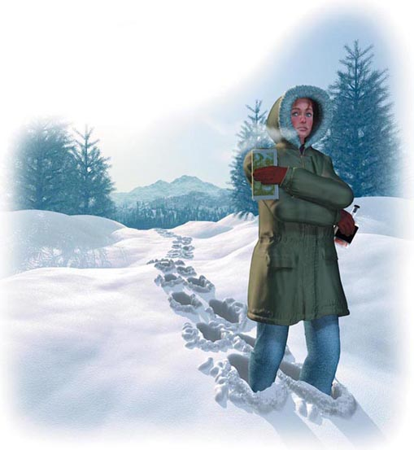
3 You go back to sleep. You don't hear the helicopter again. The next day you walk down the river again.
■ Go to 21.
4 You walk back out of the tunnel and into the rocky valley.
■ Go to 16.

5 You eat the fruit. It isn't very good, but you're very hungry so you eat a lot. You take some with you. You can eat it later.
■ Go to 10.
6 You walk for about twenty minutes, wearing the coat and carrying the bananas and the cigarette lighter. The snow is deep and you are very cold. You go into the trees and light a fire.
■ Go to 36.
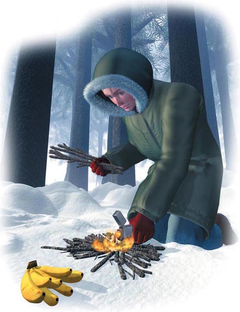
7 It's evening again, but because of the fish you are not hungry. You make a small house under the trees. You wake up early in the morning. There's a lot of noise. You run out and look up. There's a helicopter in the sky. You can see it, but it can't see you because of the trees, and it is going away.
■ You run after the helicopter. Go to 31.
■ You go back to sleep. Go to 3.
■ You build a big fire. Go to 35.
■ You shout at the helicopter and wave your arms. Go to 37.
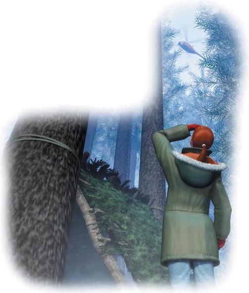
8 You are a long way down the valley, and it is nearly night again. You make a fire in the trees and eat the bananas. The next morning you are very hungry. You must find something to eat. In the snow you see the tracks of an animal. Perhaps you can kill and eat this animal.
■ You walk after the tracks. Go to 39.
■ You are afraid of big animals. Perhaps the animal is dangerous. You walk down the mountain. Go to 17.
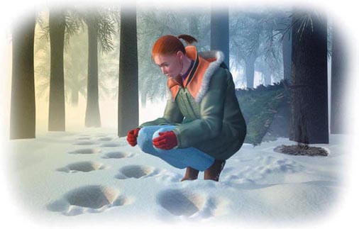
9 You walk for a few minutes, carrying the bananas, the cigarette lighter and the map. But it is very cold.
■ You light a fire. Go to 36.
■ You go back to the plane and get the whisky. Go to 34.
10 It is now afternoon. You begin to feel very ill. Perhaps the fruit is poisonous. You sit down in the snow. You cannot walk. You sit in the snow and get colder and colder.
■ Go back to1.
11 You turn to the right and the plane hits the trees.
■ Go back to1.
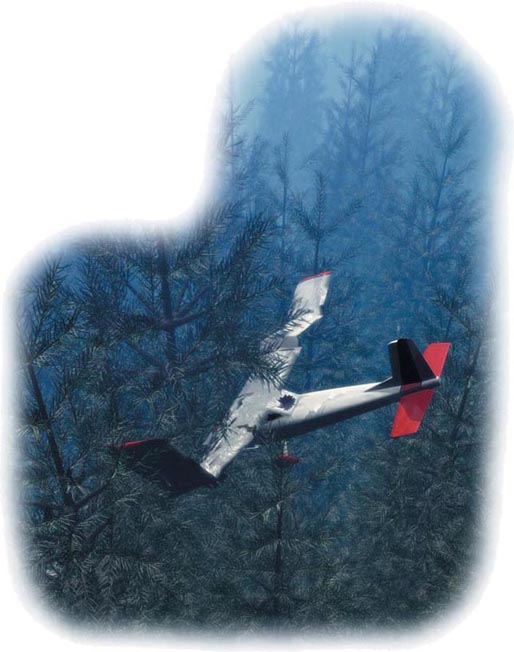
12 You walk across the lake. After a few minutes, you go through the ice, and you fall into the icy water.
■ Go back to1.
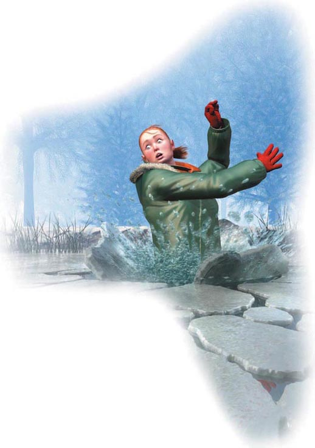
13 You walk for a few minutes, carrying the whisky, the cigarette lighter and the bananas. You are very cold.
■ You drink the whisky. Go to 34.
■ You go back to the plane, leave the whisky and take the coat. Go to 6.
14 There is ice over the river, but there are holes in it. You see that there are fish in the river. Perhaps you can catch a fish and eat it.
■ You try and catch a fish through the ice. Go to 26.
■ Fishing in the river is very dangerous. You walk on. Go to 21.
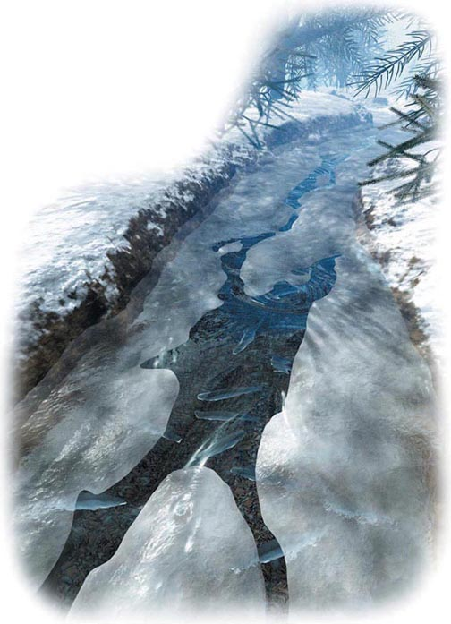
15 You turn to the left because you want to land on the snow. The plane goes into the snow and stops. You are safe, but you are at the top of a mountain and it is very cold. And it is evening.
■ You stay in the plane. Go to 24.
■ You go down the mountain. Go to 29.
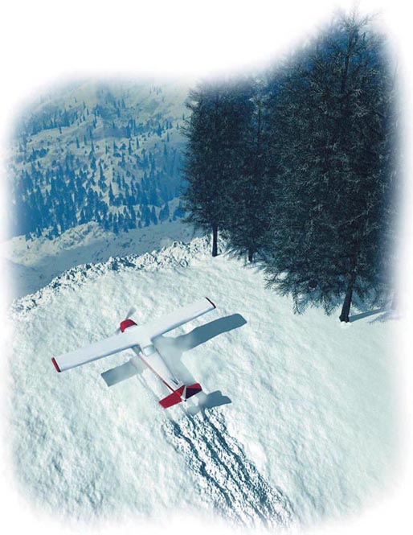
16 It is very difficult to go past the rocks in the valley. After a few minutes you are very tired.
■ You go on down the valley. Go to 8.
■ You go back up the valley and into the tunnel. Go to 33.
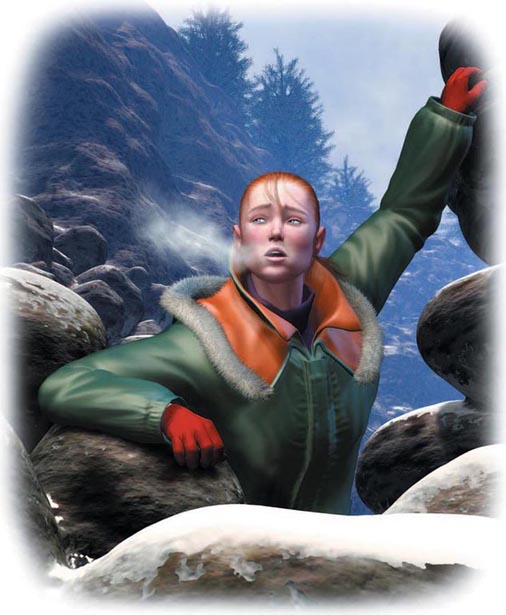
17 You walk through the trees down the mountain. You are very hungry. You see some strange fruit on one of the trees.
■ You eat the fruit. Go to 5.
■ You don't eat the fruit. Go to 23.
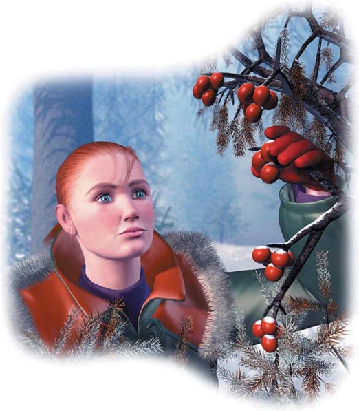
18 You walk carefully onto the lake. After a few hundred metres, the ice begins to move under your feet.
■ You go on across the lake. Go to 12.
■ You go back and walk around the lake. Go to 28.
19 You make another fire. After about two hours you hear the helicopter again. This time it sees the smoke and lands on the snow near you. You are safe. You fly to hospital where you can rest and eat.
20 You are going down very fast into the mountain but you can turn the plane to the left or the right. To the right there are some trees. To the left there is deep snow.
■ You turn to the right. Go to 11.
■ You turn to the left. Go to 15.
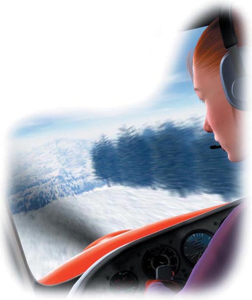
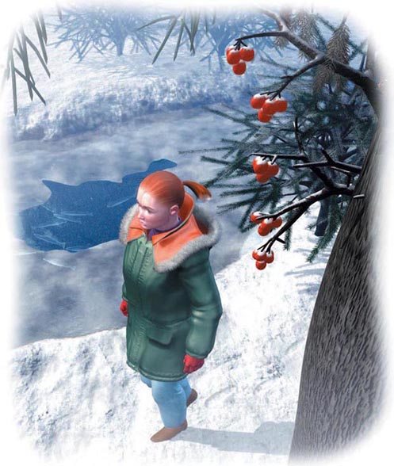
21 You walk on down the river. You are now very hungry. You must eat something. There is fruit on the trees, or fish in the river.
■ You try and catch a fish. Go to 26.
■ You eat some fruit. Go to 5.
22 The rope breaks.
■ Go back to1.
23 You continue through the snow. There is nothing to eat, but you can make fires, and there is snow to drink. Suddenly you come to an icy lake.
■ You walk across the lake. It's quicker, and you must find something to eat. Go to 18.
■ You walk around the lake. You can look for a river. Go to 28.
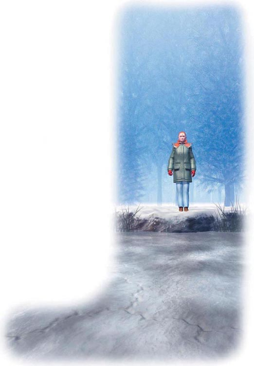
24 You stay in the plane. But it is very cold. Do you really want to die?
■ Go to 29.
25 You stay in the plane for four days. You see and hear nothing. You must go down the mountain.
■ Go to 27.
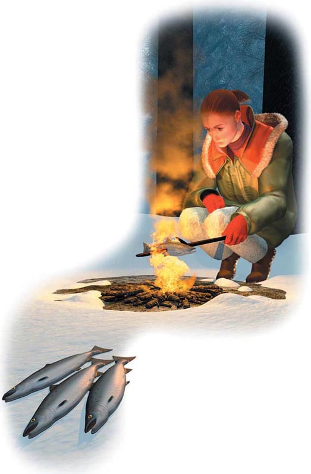
26 You fish for about twenty minutes. Finally you catch one. You catch more. You are now very cold, so you make a fire and cook and eat a fish. It's very good.
■ Go to 7.
27 You go down the mountain. After a few minutes you see a tunnel in front of you. There is a small valley to your left with a lot of rocks in it.
■ You go down the valley. Go to 16.
■ You go into the tunnel. Go to 33.
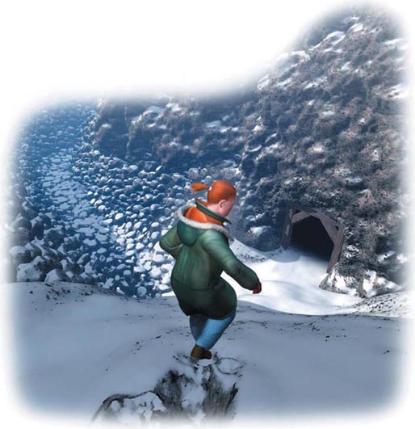
28 You walk around the lake. After about five kilometres you find a river. The water is going out of the lake and down a valley.
■ You go on around the lake. Go to 38
■ You walk down the river. Go to 14.
29 You want to go down the mountain. There are some things in the plane. You can take some of them with you. What do you take?
■ The coat, the whisky, and the map. Go to 2.
■ The coat, the bananas, and the cigarette lighter. Go to 6.
■ The bananas, the cigarette lighter, and the map. Go to 9.
■ The whisky, the cigarette lighter, and the bananas. Go to 13.
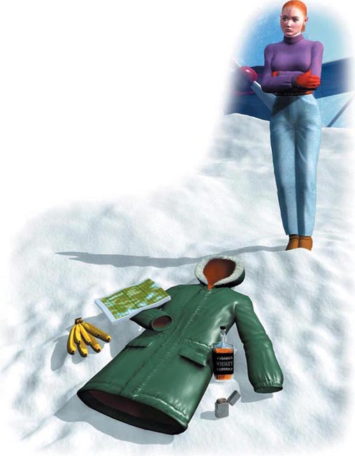
30 The smoke goes up into the sky all day. But you don't see the helicopter. You wait all day. The next morning you wake up early again.
■ You build another fire. Go to 19.
■ You walk down the river. Go to 21.
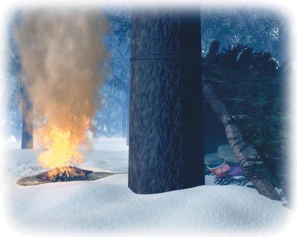
31 You run after the helicopter but it is going very fast. You have to go up the mountain, and you walk all day in the deep snow, but you don't see the helicopter again.
■ Go to 23.
32 You stay near the plane. You sit by the fire and watch the sky for two days. Nothing happens.
■ You stay near the plane. Go to 25.
■ You try and go down the mountain. Go to 27.
33 You walk into the tunnel. It's very dark. You see a lamp and you light it.
■ Go to 40.
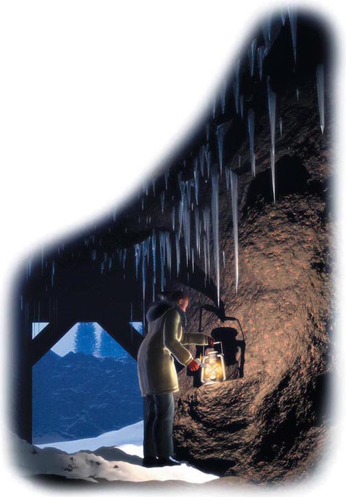
34 You want to get warm, so you drink the whisky. But you don't get warm, you just feel tired, very tired.
■ Go back to1.
35 You build a big fire. There is a lot of smoke. You watch it go up into the sky.
■ Go to 30.
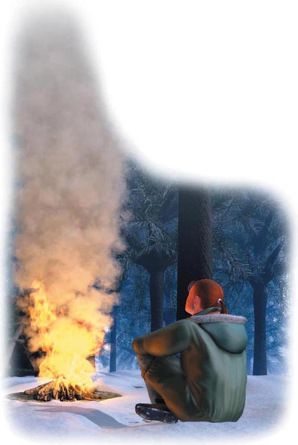
36 You sit all night in the trees in front of your fire. It is cold, but you have a good fire. You can sleep a little. You need to think about what you can do in the morning.
■ You stay near the plane with a fire. Go to 32.
■ You go down the mountain. Go to 27.
37 You shout at the helicopter and wave your arms. The helicopter turns and comes back for a minute. Then it starts to go up the mountain.
■ You run after the helicopter. Go to 31.
■ You go back to sleep. Go to 3.
■ You build a big fire. Go to 35.
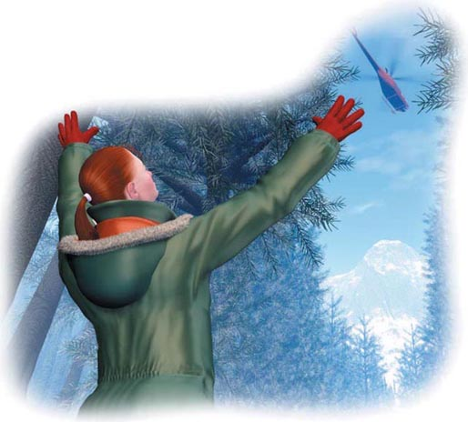
38 You walk all round the lake. You are very tired and you don't find anything to eat. You must go down the river.
■ Go to 14.
39 You walk in the tracks for a long way through the trees. They go behind a big tree. You look behind the tree and you see a very big bear. You don't think you can eat this. You walk quietly away.
■ Go to 17.
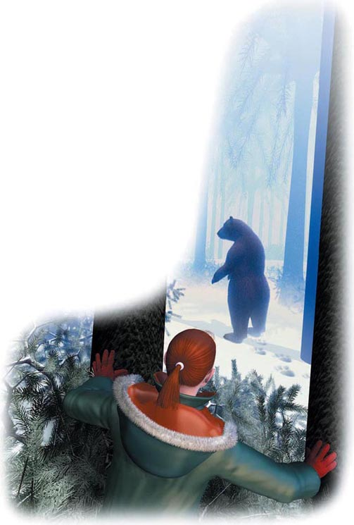
40 You walk down into the mountain for about ten minutes. You come to a big hole in the ground. There is an old rope in the hole.
■ You go down the rope. Go to 22.
■ You go back up the tunnel. Go to 4.
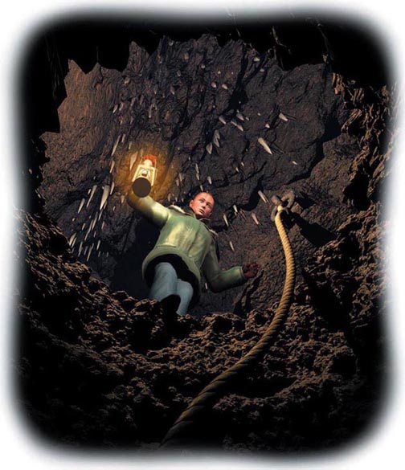
ACTIVITIES Before Reading
ACTIVITIES
Before Reading
1. Look at the front and back covers of the book and choose the correct ending for these sentences.
1) This book is _____
a a love story.
b a detective story.
c an adventure story.
d a science fiction story.
2) The story happens in _____
a Australia.
b North America.
c England.
d Africa.
3) Which of these things are in the story, do you think?
a a bicycle
b a car
c a cat
d a coat
e a dog
f a plane
g a telephone
h a tree
ACTIVITIES While Reading
ACTIVITIES
While Reading
AT THE END OF PART 16
1. Are these sentences true (T) or false (F)?
1) Chris has a big plane.
T/F
2) There are two people in the plane.
T/F
3) The radio works.
T/F
4) The engine is making strange noises.
T/F
5) Chris can turn the plane to the left.
T/F
6) There are some trees to the left.
T/F
7) There are some trees to the right.
T/F
2. Which way does Chris turn the plane, do you think?
1) To the right.
2) To the left.
AT THE END OF PART 27
1. Are these sentences true (T) or false (F)?
1) It is very cold.
T/F
2) Chris can light a fire.
T/F
3) There is no snow on the mountain.
T/F
4) There are a lot of rocks.
T/F
5) Chris has a cigarette lighter.
T/F
2. What next?
Chris _____
1) finds a person in the tunnel.
T/F
2) finds an animal in the tunnel.
T/F
3) doesn't go into the tunnel.
T/F
4) finds nothing in the tunnel.
T/F
AT THE END OF PART 7
1. Are these sentences true (T) or false (F)?
1) There is nothing to eat in the mountains.
T/F
2) There can be dangerous animals in the mountains.
T/F
3) The cigarette lighter is very useful for Chris.
T/F
4) The whisky is very useful for Chris.
T/F
5) Chris can be warm.
T/F
6) There are a lot of people in the mountains.
T/F
2. What next?
1) Chris ______
a sees the helicopter again.
b sees a plane.
c walks down the valley again.
2) The helicopter
a hits the mountain and explodes.
b sees Chris.
c goes away and doesn't come back.
ACTIVITIES After Reading
ACTIVITIES
After Reading
1. Answer these questions.
1) Which dangerous animal lives on the mountain?
___________________________
2) What is white, deep and very cold?
___________________________
3) What animal lives in rivers?
___________________________
4) What does Chris use to light a fire?
___________________________
5) Does Chris walk up or down the mountain?
___________________________
6) How many nights is Chris on the mountain?
___________________________
2. Choose the correct ending to these sentences.
1) The plane hits the mountain______
a because the radio doesn't work.
b because the engine stops.
c because it is snowing.
2) The lake is dangerous______
a because there are fish in it.
b because it is on fire.
c because there are holes in the ice.
3) When Chris sees the helicopter, she lights the fire______
a because it is cold.
b because she wants to burn the helicopter.
c because she wants to make smoke.
3. Can you remember what these things are?
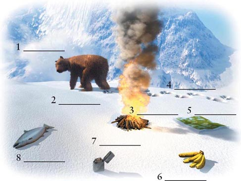
4. Complete these sentences using the following words:
cold, deep, fires, helicopter, houses, Mountains, plane, river, safe, snow, valley, walks.
Chris is in a small ______ going across the Rocky ______. The engine stops and the plane comes down in the ______. There are no ______ or roads near. Chris takes some things from the plane and ______ down the mountain through the ______ snow. It is very ______, and Chris lights ______. Chris goes down a long ______, near a ______. Finally Chris sees a ______. Chris is ______.
参考译文
参考译文
Survive!
生存游戏
1 你名叫克丽丝，正驾驶一架小型飞机飞越落基山脉。突然，发动机发出了奇怪的响声，飞机朝着一座山坠去。你的无线电失灵了，没有人知道你所在的位置。
■见第20节。
2 你穿着外套，拿着威士忌和地图，走了大约二十分钟。积雪很厚，你感到很冷。
■你回到飞机上，拿了一些其他物品。见第29节。
■为了暖和一点儿，你喝了威士忌。见第34节。
3 你回去睡觉，再也没听到直升机的声音。第二天，你继续沿着河边走。
■见第21节。
4 你原路返回，出了隧道，走进乱石丛生的山谷。
■见第16节。
5 你吃了果子。虽然味道不好，但是你太饿了，还是吃了不少。你带了些果子在身上，过后可以吃。
■见第10节。
6 你穿着外套，拿着香蕉和打火机，走了大约二十分钟。积雪很厚，你感到很冷。你走到树林里，生起一堆火。
■见第36节。
7 又到了晚上，但因为之前吃了鱼，你并没有觉得饿。你在树下搭了一座小棚子。早上醒来后，你听到了一阵响声。你跑出棚子往天上看，发现有一架直升机。虽然你看得见飞机，但因为树木的遮挡，飞机上的人看不到你。飞机就要飞走了。
■你追着直升机跑。见第31节。
■你回棚子睡觉。见第3节。
■你生起一大堆火。见第35节。
■你冲着直升机一边大声呼喊，一边挥动双臂。见第37节。
8 你顺着山谷走出很远，夜晚又要来临了。你在树林里生起了火，吃了香蕉。第二天早上，你感到很饿，必须找些东西吃。你在雪地上发现了动物的脚印，也许你可以猎杀这只动物作食物。
■你沿着脚印追踪而去。见第39节。
■你很害怕大型动物。或许这只动物很危险，于是你向山下走去。见第17节。
9 你带着香蕉、打火机和地图走了几分钟，感到非常寒冷。
■你生起一堆火。见第36节。
■你回到飞机上去取威士忌。见第34节。
10 时间到了下午。你开始觉得很不舒服。也许那些果子有毒。你走不动了，坐在雪地上，觉得越来越冷。
■回到第1节。
11 你向右转，飞机撞到了树上。
■回到第1节。
12 你横穿湖面，在冰上走。几分钟后，冰裂开了，你掉进了冰水里。
■回到第1节。
13 你带着威士忌、打火机和香蕉走了几分钟，感到非常寒冷。
■你喝了威士忌。见第34节。
■你回到飞机上，放下了威士忌，带上了外套。见第6节。
14 河面上结了冰，但中间有洞隙。你看到河里有鱼。也许你可以抓一条鱼吃。
■你试着从冰隙间捉一条鱼。见第26节。
■在河里捉鱼很危险。你继续往前走。见第21节。
15 你向左转，想在雪地上着陆。飞机落入雪中，停了下来。你虽然安全了，但却身处山顶，天气非常寒冷。天黑了下来。
■你待在飞机上。见第24节。
■你向山下走去。见第29节。
16 山谷中的岩石很难攀爬，几分钟之后你就疲惫不堪了。
■你继续沿着山谷走。见第8节。
■你往回走，出了山谷，进了隧道。见第33节。
17 你穿过树林向山下走，感觉饥肠辘辘。你看到有一棵树上结着没见过的果子。
■你吃了果子。见第5节。
■你不吃果子。见第23节。
18 你小心地走上湖面。走了几百米后，脚下的冰开始晃动。
■你继续在湖面上穿行。见第12节。
■你退了回去，然后绕着湖走。见第28节。
19 你重新生起一堆火。大概两个小时后，你又听到了直升机的声音。这一次，飞机看到了烟，停在了你旁边的雪地上。这下你安全了。你乘飞机前往医院，可以在那里吃饭和休息。
20 你极快地向山中坠去，但你可以让飞机向左转弯或向右转弯。右边是一些树木，左边是厚厚的积雪。
■你向右转。见第11节。
■你向左转。见第15节。
21 你继续沿着河走，感觉非常饥饿，必须找东西吃。树上有果子，河中有鱼。
■你尝试着抓一条鱼。见第26节。
■你吃了一些果子。见第5节。
22 绳子断了。
■回到第1节。
23 你继续在雪中跋涉。没有吃的东西，但你可以生火，还可以喝雪水。突然，你发现前面有一片结了冰的湖。
■你横穿湖面。这样会快一些，你必须找点吃的东西。见第18节。
■你绕着湖走。你去寻找一条河。见第28节。
24 你待在飞机上，但感到非常寒冷。你真的不想活了吗？
■见第29节。
25 你在飞机上待了四天，什么也看不到，什么也听不到。你必须下山。
■见第27节。
26 经过二十分钟的努力，你终于捉到了一条鱼。你又多捉了几条。你感到很冷，于是生起了一堆火，烤了一条鱼吃。味道好极了。
■见第7节。
27 你朝山下走去。几分钟后看到前面有一条隧道。你的左侧还有一个布满岩石的小山谷。
■你沿着山谷走去。见第16节。
■你走进隧道。见第33节。
28 你绕着湖走。大约走了五公里，你发现了一条河。河水从湖中流出，向山谷流去。
■你继续绕着湖走。见第38节。
■你沿着河走去。见第14节。
29 你想下山。飞机上有一些东西，你可以随身带上几样。你会带哪些呢？
■外套、威士忌和地图。见第2节。
■外套、香蕉和打火机。见第6节。
■香蕉、打火机和地图。见第9节。
■威士忌、打火机和香蕉。见第13节。
30 一整天，烟不停地升上天空，但是直升机没有出现。你等了一整天。第二天，你又一大早就醒来了。
■你重新生起一堆火。见第19节。
■你沿着河走去。见第21节。
31 你追着直升机跑，但它飞得很快。你不得不往山上爬，在厚厚的雪中跋涉了一整天，但再也没见到那架直升机。
■见第23节。
32 你待在飞机附近。坐在火边，看着天，就这样过了两天。什么也没有发生。
■你待在飞机附近。见第25节。
■你试着向山下走去。见第27节。
33 你走进隧道。里面漆黑一片。你看到有一盏灯，便点上了。
■见第40节。
34 为了暖和一点儿，你喝了威士忌，但并没有觉得暖和起来。你只是感到很累，筋疲力尽。
■回到第1节。
35 你生起一大堆火，火堆冒出很多烟。你看着冲天的烟柱。
■见第30节。
36 你整晚都坐在树林里的火堆前。虽然天很冷，但火烧得很旺，你可以稍微睡一会儿。你需要想想天亮以后你可以做些什么。
■你燃着火堆，待在飞机附近。见第32节。
■你向山下走去。见第27节。
37 你冲着直升机一边大声呼喊，一边挥动双臂。直升机掉头往回飞了一会儿，然后向山上飞去。
■你追着直升机跑。见第31节。
■你回去睡觉。见第3节。
■你生起一大堆火。见第35节。
38 你绕着湖走了一整圈，筋疲力尽，没有找到任何食物。你只能沿着河走。
■见第14节。
39 你沿着脚印在树林中走了很远。脚印延伸到一棵大树的后面。你朝树后看去，看到了一只大熊。这肯定不是能吃的。你悄悄地离开了。
■见第17节。
40 你向山的深处走，大约走了十分钟，发现地上有一个很大的洞。一条很旧的绳子一直延伸到洞中。
■你顺着绳子下到洞中。见第22节。
■你退回到隧道口。见第4节。
封底
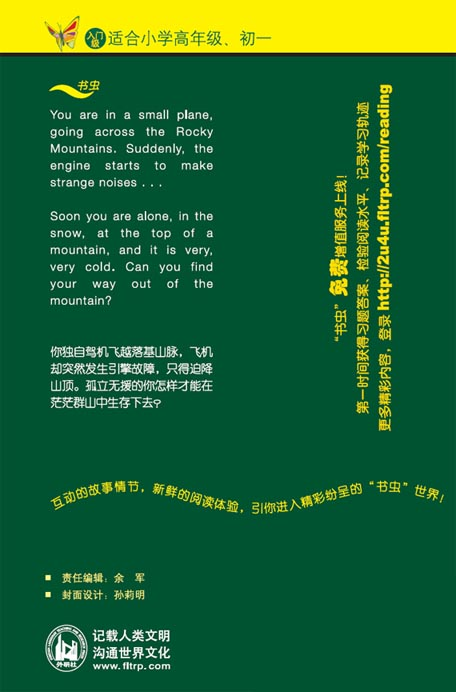